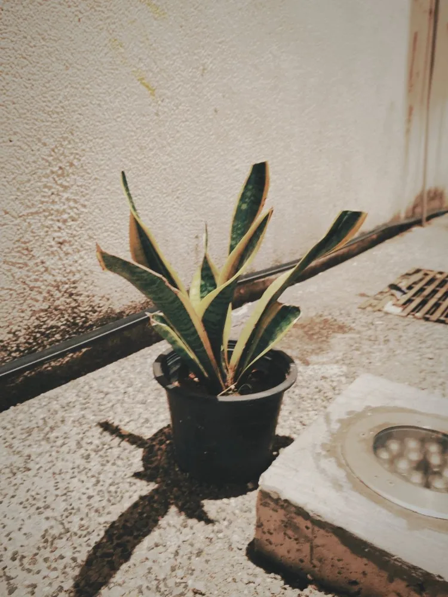

01 — ART / NATURE / VISUAL
IM
PRINT
A visual journey between nature, time and imagination.
MALAYSIA · AVAILABLE FOR SELECT PROJECTS

SELECTED PRACTICE / 2022—26
Print the unseen into form.
Photography, film and visual design — collected as fragments, shaped into stories, and held in memory.
EXPLORE SELECTED WORKS ↘01 / SELECTED WORKSSCROLL TO DISCOVER ↓VISUAL ARCHIVE — 2026
A CURATED INDEX
Selected works.

Observe closely.
Make meaning.
ABOUT TARYNN LEE
A visual creative exploring the relationship between nature, people and places through photography, travel film, collage and visual experimentation. This portfolio is an evolving archive of things noticed, felt and remade.
FOLLOW THE PROCESS ↗OPEN FOR FREELANCE / COLLABORATION